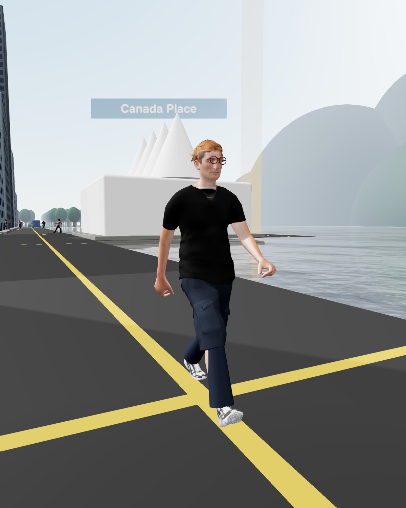
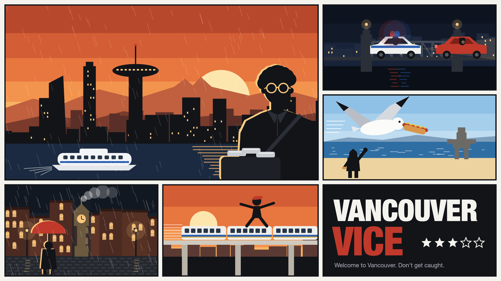
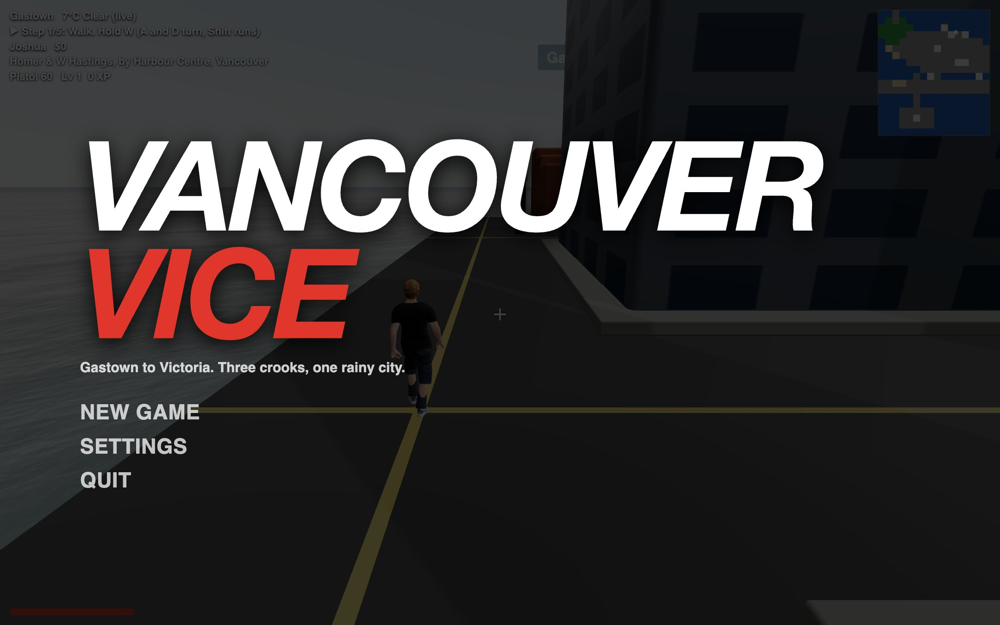
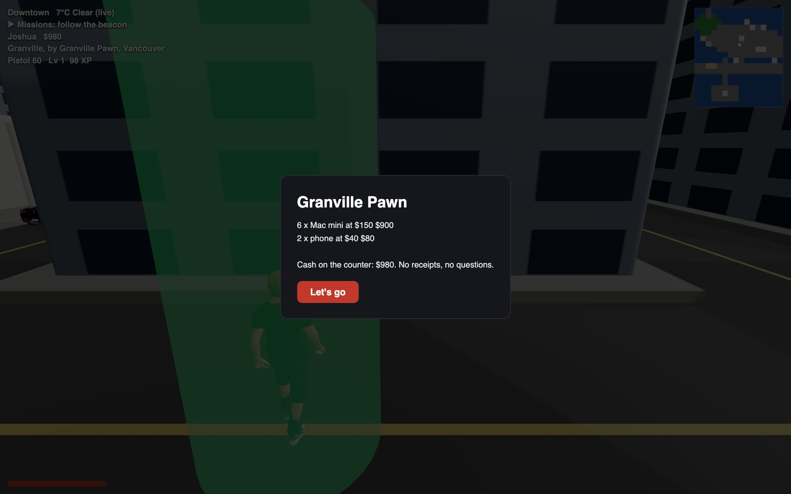
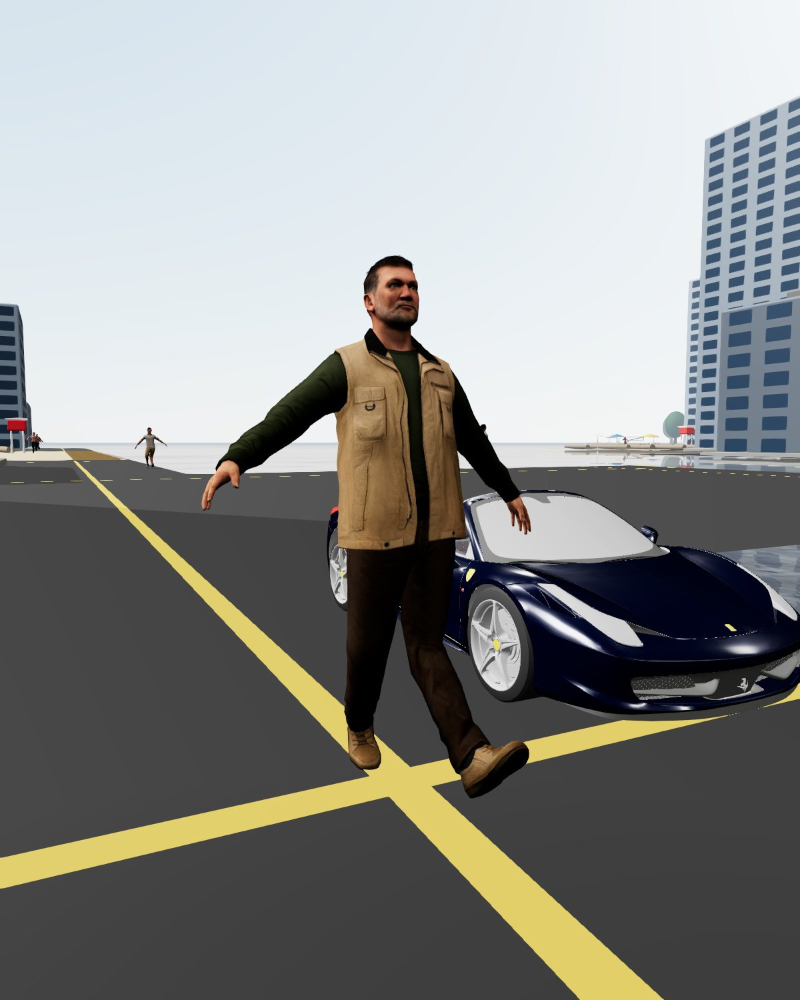
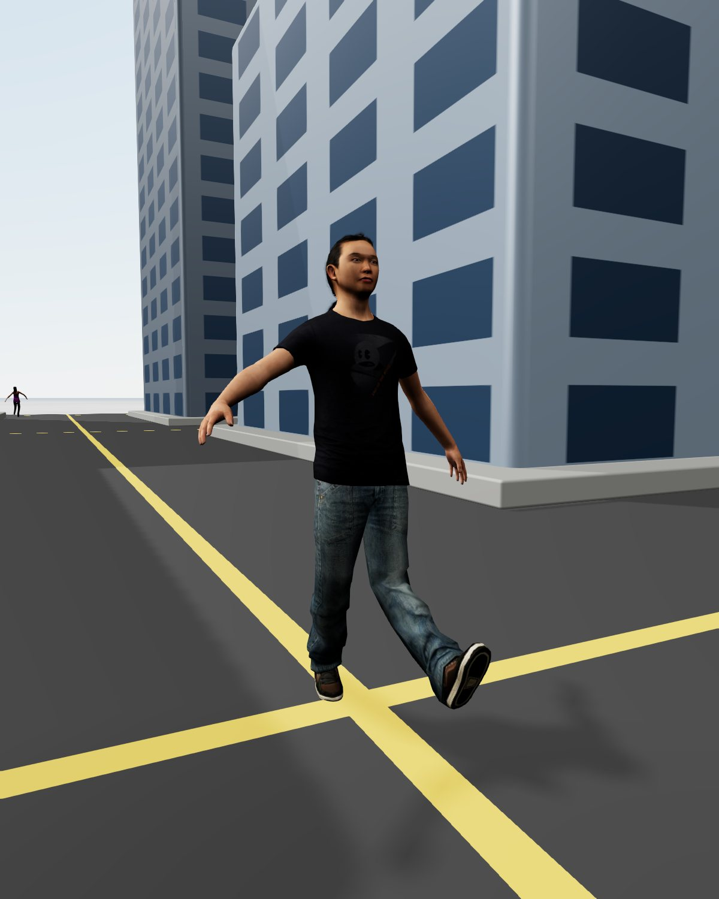
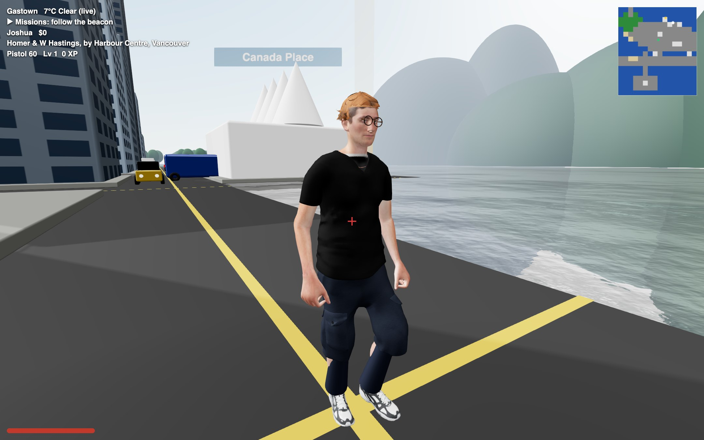

Joshua

Joshua
Gastown
Walked out of the Apple Store on Georgia with six Mac minis and no receipt. Owes Dmitri forty grand. Owes his dad a hard drive.
Half again on every job. The cops lose interest twice as fast.

Rent is four grand, it rains nine months a year, and those Mac minis aren't going to steal themselves.
Download the gameSee it playGameplay
Jack a car on Granville, lose the cops on the Burrard Bridge, pawn the loot on Granville Street, then fast travel to Victoria before the heat finds you.


The crew

Gastown
Walked out of the Apple Store on Georgia with six Mac minis and no receipt. Owes Dmitri forty grand. Owes his dad a hard drive.
Half again on every job. The cops lose interest twice as fast.

Kitsilano
Fixes garage doors, runs the seawall at six, and collects on unpaid bills the hard way. Knows where Dad keeps the boat.
Fastest on his feet. Drops anyone in two punches.

Victoria
The fixer across the water. Steady hands, fast cars, and he knows which ferry Dmitri takes home on Saturday.
Aims half again further. Shrugs off a third of the damage.
The city
Gastown to Victoria in the browser. In the Unreal build it's Google's 3D scan of the actual city, streamed live, and you start outside the real Apple Store on Georgia.



Every crime adds heat. Five stars brings the whole department.
The sky is Vancouver's real sky right now, rain and all.
From the Apple Store to the Waterfront, with your family in it.
Mac, Windows, Linux and Android. One free download.
Free. Download it for your computer or phone.
MacWindowsLinuxAndroid